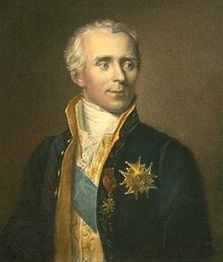

1749-1827
Pierre-Simon Laplace

Portrait: James Posselwhite, Public domain, Wikimedia Commons.
Events (6)
- 1657Probability from games of chance
developer · Probability
- 1733De Moivre: normal approximation to the binomial
developer · Probability
- 1764Bayes' inverse probability
systematiser · Statistics & decision theory
- 1782Laplace's analytic probability
developer · Probability
- 1786Potential theory in celestial mechanics and physics
developer · Differential equations
- 1805Least squares
developer · Statistics & decision theory